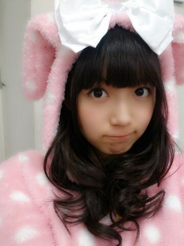
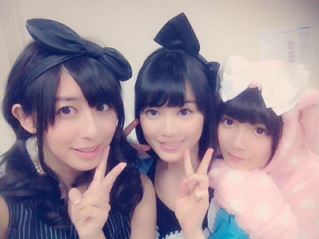

| 2013/10 15 Tue | ひめたん(*>ω<*)そ の355 |
むむむ。

え、何？じゃないですよー
はっぴーハロウィーンですよー
仮装です仮装！
私服じゃないです！
無論パジャマでもない！これは仮装だ！
＼ばかりぼん中３組／

えーやだーみんな幼いーかわいー
にしても、ほんとにあれですね
うさぎさんパワーはすごいですね
わーうさぎさんだーもこもこーって
メンバーみんなに愛でてもらったの
いやー着ぐるみって素晴らしい。
純奈たんブログみたよーありがとー＼(^O^)／
握手に来てくださったみなさーん
ちょうどタイミング的にも
真面目な話をしに来てくださったのに
ひめたんがこんなにもうさぎさんすぎて
話すこと忘れちゃったーなんて方も
いっぱいいらっしゃったみたいでごめんね←
それからはじめましての方で
「あーひめたんていっつもこんな子なのか」って
驚いてた方もいっぱいいらっしゃったけど
違うよーこの前だけだからねー！
とゆーわけで
6thシングルの握手会は
すべて終了したわけでございました！
本当にありがとうございました(*^ω^*)
6th握手会も新しい出会いがたくさんありました＊
アンダー曲のPVでは
素敵なポジションで歌わせていただいたり
コウモリよ もユニットでできたりして
たくさんの方に見つけていただけたのも
そーゆーチャンスを作ってくださったおかげかなー
7thもがんばります(｀・ω・´)
あっ握手来てくださった方に
ほんと申し訳ないことしたんだけどね
のどがかっすかすなってて
しかも後半頭くらくらーてなってたから
もしかしたら会話してても
いつもよりふわふわしてたかもしれない......
本当にごめんなさい(´・ω・｀)
そして、ある撮影で
とってもとってもステキな体験を
させていただきました。
テンションあがりすぎて
のどが悪化してしまったとか言えない←
一生に一度あるかないかだと思うほんとに！
はよみなさんに言いたくてうずうずー......
さらに乃木どこ
見てくださった方ありがとう！
VTRの中でも言ってたけど
いやーメディアの力ってすんばらしいですねっ
いろーんなこと話してきました(〃ω〃)
どこにも言ったことないエピソードいっぱいで
私たち新選抜の３人のこと
もっと知ってもらえたかなー♪
個人的にはあのVTR
終始ひめたんの顔左側写ってるけど
自分の左横顔すきじゃないんよなー
だから見てて苦痛(´・ω・｀)笑
それからみさみさ(衛藤美彩ちゃん)の
ツインについてるりぼんは
ひめたんの私物◎

 ひめたんは広島弁のじゃけんは
ひめたんは広島弁のじゃけんは
会話とかで使いますか？
ふっと方言はでたりする？
東京の人と話してるとあんまでないですー
広島弁しゃべってーとか言われても
え？え？え？ってなる。
興奮したら広島弁でるかなー
夜中にお腹空いてしまった時は我慢する？
それとも、何か食べちゃう？
食べません(｀・ω・´)寝ます
一週間後の英単語のテストの範囲が
1000個もあるんだけど...
何か覚えるコツとかありますか？
いくちゃんに助けてもらって
一晩で満点取ったことあるよー
そん時は語呂で覚えました！ふぁいとー
ダンガンロンパのグッズ
プレゼントしたいんだけど、
どんなグッズがいいカナ？
わーい＼(^O^)／嬉しい超嬉しい！
おまかせしますよーう♪
広島カープのカープ（鯉）の由来は
広島の戦国時代以前の地名が
己斐（こい）だったからだって知ってたー？
知ってますよー学校で習ったの！
ひめたんはINGNIとかすきですか？？
INGNIもたまーに着ます∩^ω^∩
かわいいよねー！
コメントたくさん
ありがとうございます(´;ω;｀)
これがメディアの力なのかああああっ
(＊´・ω・＊)
コメント(426)
2013/10/15 07:42